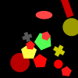

(1)
More than zero of the three semicircles are yellow.
Exactly zero rectangles are yellow.
At most two thirds of the green shapes are semicircles.
At least one gray shape is a rectangle.
Not three quarters of the yellow shapes are rectangles.
(2)
More than half as many magenta shapes as red shapes are rectangles.
More than two thirds of the two gray shapes are semicircles.
More than no blue shape is a semicircle.
As many red shapes as cyan shapes are rectangles.
At most two thirds of the two gray shapes are semicircles.

(3)
Less than half as many gray shapes as red shapes are ellipses.
Not zero yellow shapes are rectangles.
At least a quarter of the yellow shapes are rectangles.
Less than two thirds of the six yellow shapes are ellipses.
One less yellow shape than gray shapes is an ellipse.
(4)
At most two green shapes are pentagons.
One less cyan shape than green shapes is a pentagon.
At least zero circles are magenta.
Less than one of the five green shapes is crosses.
As many pentagons as triangles are green.
(5)
Three more crosses than triangles are green.
At least two of the five circles are green.
More than one circle is gray.
Not five of the two crosses are green.
Five more circles than semicircles are green.
(6)
Not one ellipse is green.
Not two green shapes are circles.
Not one of the three circles is green.
Exactly two of the six green shapes are circles.
Not five gray shapes are ellipses.

(7)
More than a quarter of the crosses are red.
At most one red shape is a circle.
At least three quarters of the red shapes are pentagons.
Exactly four of the three circles are red.
Exactly two yellow shapes are circles.
(8)
Not all magenta shapes are semicircles.
At least a third of the red shapes are pentagons.
Exactly three red shapes are semicircles.
Less than a third of the five semicircles is red.
One less pentagon than semicircles is red.
(9)
Exactly half the four crosses are magenta.
Not zero yellow shapes are semicircles.
More than two of the eight yellow shapes are triangles.
Less than half as many triangles as crosses are yellow.
Less yellow shapes than magenta shapes are crosses.
(10)
Exactly half the magenta shapes are triangles.
Not two thirds of the magenta shapes are crosses.
Less semicircles than crosses are magenta.
Less than all crosses are magenta.
Less semicircles than squares are gray.
(11)
Exactly a third of the two squares is magenta.
Not four of the three blue shapes are ellipses.
At most three quarters of the two crosses are magenta.
As many squares as semicircles are yellow.
More than twice as many ellipses as crosses are blue.
(12)
Three more cyan shapes than blue shapes are rectangles.
More rectangles than triangles are cyan.
Less than half the cyan shapes are rectangles.
At most two thirds of the four triangles are cyan.
More than four cyan shapes are ellipses.
(13)
One more triangle than ellipses is red.
At most two of the two ellipses are gray.
More than twice as many triangles as ellipses are gray.
Not zero gray shapes are triangles.
Three more red shapes than gray shapes are triangles.
(14)
Not all triangles are green.
Less than twice as many magenta shapes as green shapes are triangles.
Not a quarter of the magenta shapes are crosses.
At most a third of the rectangles is magenta.
As many rectangles as crosses are green.
(15)
At most two pentagons are gray.
Exactly three quarters of the squares are yellow.
Not three quarters of the four gray shapes are pentagons.
At most one of the two yellow shapes is triangles.
More than half as many cyan shapes as blue shapes are rectangles.
(16)
Not four pentagons are cyan.
Not two cyan shapes are semicircles.
At least a third of the cyan shapes are crosses.
Less than three of the three pentagons are cyan.
One less circle than pentagons is green.

(17)
At least a quarter of the two circles are blue.
At most three quarters of the two pentagons are blue.
Not two of the six crosses are gray.
One more cross than pentagons is blue.
One more cross than pentagons is red.
(18)
At least three triangles are magenta.
At least three quarters of the magenta shapes are triangles.
Not four of the four triangles are magenta.
More than two thirds of the four circles are magenta.
More than three of the six magenta shapes are triangles.
(19)
More than three quarters of the pentagons are gray.
At least a third of the three yellow shapes are triangles.
Less than three quarters of the yellow shapes are squares.
One more square than pentagons is magenta.
At least zero of the four squares are cyan.
(20)
More than half the three circles are green.
Less than all the two circles are magenta.
Less than three quarters of the red shapes are triangles.
At least zero green shapes are semicircles.
Three more cyan shapes than blue shapes are triangles.
(21)
Twice as many blue shapes as gray shapes are crosses.
At most a third of the three crosses is gray.
Exactly two of the two rectangles are blue.
Not all rectangles are blue.
Not three of the three crosses are blue.
(22)
At most all the two cyan shapes are squares.
More than zero semicircles are magenta.
Five more blue shapes than gray shapes are ellipses.
Less than three yellow shapes are ellipses.
Not none of the four squares is red.
(23)
Not four semicircles are cyan.
At least five red shapes are crosses.
Not none of the six crosses is red.
At most a quarter of the crosses are cyan.
Not one of the seven crosses is red.
(24)
Two more triangles than crosses are magenta.
Less crosses than triangles are magenta.
More than a third of the triangles is red.
Not none of the eight magenta shapes is triangles.
More than no magenta shape is an ellipse.
(25)
At least three quarters of the yellow shapes are ellipses.
Exactly half the two rectangles are red.
At most two yellow shapes are ellipses.
Less than a third of the three ellipses is red.
At least two thirds of the yellow shapes are ellipses.
(26)
Less than four gray shapes are crosses.
At least zero of the five crosses are gray.
Less than twice as many semicircles as crosses are gray.
At most two thirds of the crosses are gray.
More than one of the five crosses is gray.
(27)
Less than half the seven red shapes are semicircles.
Less than three red shapes are pentagons.
More than zero pentagons are magenta.
At most five semicircles are cyan.
Exactly all the six pentagons are red.
(28)
More than twice as many circles as squares are cyan.
More cyan shapes than green shapes are circles.
More blue shapes than cyan shapes are squares.
Not three quarters of the two green shapes are circles.
Two more cyan shapes than green shapes are circles.
(29)
At most two thirds of the four blue shapes are triangles.
As many circles as crosses are cyan.
More than half as many cyan shapes as green shapes are semicircles.
Less than all the four cyan shapes are triangles.
Not a third of the four green shapes are semicircles.
(30)
More than half as many magenta shapes as yellow shapes are semicircles.
Less than twice as many triangles as crosses are cyan.
More than none of the eight magenta shapes is pentagons.
More than three quarters of the pentagons are yellow.
Less than a third of the four semicircles is yellow.
(31)
Not five of the eight yellow shapes are triangles.
Not three of the seven triangles are green.
More than three quarters of the semicircles are yellow.
Less than four triangles are yellow.
Twice as many yellow shapes as gray shapes are triangles.
(32)
At least two yellow shapes are circles.
Less than a quarter of the seven gray shapes are ellipses.
Exactly two circles are yellow.
Less than four of the six gray shapes are ellipses.
Not three of the seven gray shapes are crosses.
(33)
Exactly three quarters of the squares are magenta.
More than three quarters of the pentagons are magenta.
Less than a third of the four cyan shapes are squares.
More than two rectangles are red.
Not five of the four cyan shapes are pentagons.
(34)
At least two of the two circles are red.
More than two thirds of the five blue shapes are ellipses.
One less red shape than gray shapes is a triangle.
Half as many gray shapes as blue shapes are pentagons.
More than half as many gray shapes as red shapes are crosses.
(35)
More than half as many green shapes as blue shapes are pentagons.
More than two thirds of the green shapes are ellipses.
More than zero pentagons are red.
Exactly five cyan shapes are pentagons.
One more cyan shape than magenta shapes is a pentagon.
(36)
Half as many magenta shapes as red shapes are rectangles.
Half as many rectangles as ellipses are magenta.
At most two thirds of the four rectangles are magenta.
Half as many rectangles as semicircles are magenta.
Exactly three quarters of the semicircles are magenta.
(37)
Not a third of the semicircles is blue.
Less than four of the three green shapes are circles.
More than three quarters of the blue shapes are rectangles.
More than four semicircles are blue.
Exactly three circles are red.
(38)
Two less pentagons than circles are blue.
Exactly two of the five circles are blue.
At least four blue shapes are semicircles.
Less than twice as many squares as pentagons are blue.
Five more pentagons than rectangles are blue.
(39)
Exactly two red shapes are rectangles.
At least half the triangles are cyan.
As many pentagons as triangles are cyan.
Less than three of the four triangles are green.
More than three quarters of the magenta shapes are ellipses.

(40)
At most three squares are green.
Exactly a third of the crosses is magenta.
More than three rectangles are cyan.
As many yellow shapes as magenta shapes are squares.
At least four squares are cyan.
(41)
Four more cyan shapes than blue shapes are ellipses.
Not four of the six cyan shapes are ellipses.
More than zero triangles are blue.
Not three quarters of the two cyan shapes are ellipses.
Less than a third of the ellipses is blue.
(42)
At least one of the three cyan shapes is semicircles.
Less than a quarter of the three crosses are cyan.
More than a third of the three circles is magenta.
At most three quarters of the triangles are magenta.
Less than twice as many magenta shapes as gray shapes are crosses.
(43)
Not a third of the ellipses is cyan.
As many cyan shapes as yellow shapes are ellipses.
More than three quarters of the ellipses are cyan.
Less than twice as many yellow shapes as cyan shapes are ellipses.
Not one magenta shape is a cross.
(44)
Less than two semicircles are green.
Exactly zero of the four semicircles are blue.
At most five of the six blue shapes are squares.
At most three quarters of the five blue shapes are circles.
At least three quarters of the yellow shapes are semicircles.
(45)
More than half as many gray shapes as yellow shapes are semicircles.
Not three quarters of the blue shapes are triangles.
Not one triangle is blue.
Exactly three semicircles are blue.
Less than two thirds of the semicircles are blue.
(46)
Not two thirds of the blue shapes are circles.
Not three of the four rectangles are red.
Less than one of the three cyan shapes is circles.
At least half the three red shapes are crosses.
Not two of the seven cyan shapes are circles.
(47)
Two more blue shapes than green shapes are circles.
At most one of the three blue shapes is pentagons.
More than twice as many circles as pentagons are blue.
Not three of the four red shapes are pentagons.
Less than all circles are blue.
(48)
Less than half the three cyan shapes are squares.
Five more yellow shapes than gray shapes are squares.
Exactly two of the four cyan shapes are squares.
Not one of the two semicircles is cyan.
More than half as many magenta shapes as cyan shapes are squares.
(49)
At least two of the three magenta shapes are semicircles.
Less squares than semicircles are blue.
At most one of the six yellow shapes is semicircles.
Three more yellow shapes than blue shapes are triangles.
Exactly half the three squares are yellow.
(50)
Exactly a quarter of the three rectangles are green.
Less than two thirds of the green shapes are rectangles.
Less than half as many cyan shapes as gray shapes are rectangles.
Not none of the three rectangles is green.
More than twice as many gray shapes as green shapes are rectangles.
(51)
Not all the three cyan shapes are crosses.
Less than a third of the cyan shapes are pentagons.
Half as many pentagons as crosses are cyan.
Three more yellow shapes than cyan shapes are crosses.
More than none of the four gray shapes is crosses.
(52)
At most three squares are red.
Not four of the six red shapes are squares.
Exactly zero squares are red.
Not one red shape is a square.
At least a quarter of the cyan shapes are squares.
(53)
Less ellipses than rectangles are red.
Not a third of the five squares is cyan.
Less than twice as many ellipses as rectangles are red.
Not all red shapes are rectangles.
Less than one of the five rectangles is green.
(54)
Less than all cyan shapes are triangles.
At least four of the seven cyan shapes are triangles.
Exactly two triangles are cyan.
As many green shapes as red shapes are crosses.
Twice as many cyan shapes as green shapes are triangles.
(55)
At most a quarter of the gray shapes are pentagons.
At most five of the eight triangles are gray.
More triangles than rectangles are green.
At least zero of the three green shapes are triangles.
Twice as many gray shapes as green shapes are triangles.
(56)
More than half as many semicircles as rectangles are green.
Not three of the five green shapes are semicircles.
Not two thirds of the seven green shapes are crosses.
Less than four green shapes are crosses.
More than three quarters of the yellow shapes are crosses.
(57)
Five more gray shapes than magenta shapes are semicircles.
At least five semicircles are gray.
Exactly one rectangle is magenta.
Five more gray shapes than blue shapes are semicircles.
At least a third of the seven semicircles is red.
(58)
At most two thirds of the gray shapes are squares.
Exactly half the two gray shapes are squares.
More than twice as many rectangles as circles are cyan.
Exactly four squares are green.
At least half the three cyan shapes are circles.
(59)
As many yellow shapes as blue shapes are crosses.
Exactly three red shapes are squares.
Less than half the five red shapes are squares.
At most five of the two yellow shapes are circles.
Half as many semicircles as squares are red.

(60)
More than twice as many pentagons as ellipses are gray.
More than two ellipses are gray.
Exactly one magenta shape is an ellipse.
Less cyan shapes than gray shapes are ellipses.
At most five of the three rectangles are blue.

(61)
At least three pentagons are green.
More than three of the four gray shapes are ellipses.
Less than twice as many pentagons as ellipses are yellow.
At least four of the seven yellow shapes are rectangles.
At least two thirds of the green shapes are ellipses.
(62)
Less than twice as many cyan shapes as blue shapes are crosses.
At most two thirds of the red shapes are ellipses.
Exactly one ellipse is magenta.
At least a third of the blue shapes are triangles.
Exactly no red shape is a square.
(63)
Four more rectangles than ellipses are blue.
At least three quarters of the ellipses are blue.
More than two thirds of the semicircles are blue.
Exactly a quarter of the semicircles are blue.
Less than half as many rectangles as pentagons are blue.
(64)
Half as many circles as pentagons are red.
Less than half as many triangles as pentagons are red.
Not zero of the two yellow shapes are pentagons.
Exactly zero yellow shapes are triangles.
Exactly a quarter of the two yellow shapes are triangles.
(65)
Two more squares than rectangles are magenta.
One more pentagon than circles is gray.
One more red shape than blue shapes is a square.
One less blue shape than green shapes is a square.
Less than half as many blue shapes as red shapes are squares.
(66)
At least a quarter of the pentagons are yellow.
Not five of the eight rectangles are green.
One less ellipse than pentagons is green.
At least none of the two magenta shapes is rectangles.
Exactly a quarter of the green shapes are rectangles.
(67)
Not half the five pentagons are magenta.
At most three of the three blue shapes are pentagons.
Less than two thirds of the magenta shapes are pentagons.
More than half as many circles as pentagons are magenta.
At least three of the six pentagons are blue.
(68)
At least a quarter of the two circles are red.
Less than half the two cyan shapes are rectangles.
At least a quarter of the rectangles are cyan.
At most four yellow shapes are rectangles.
Less than a third of the rectangles is yellow.
(69)
Not one gray shape is a circle.
Not one of the three blue shapes is ellipses.
Less than one ellipse is blue.
Exactly half the blue shapes are ellipses.
At least one of the seven circles is gray.
(70)
More than four of the eight cyan shapes are crosses.
Not a third of the six crosses is cyan.
Exactly three of the six crosses are cyan.
At most all the three pentagons are gray.
Less crosses than squares are gray.

(71)
Not none of the five magenta shapes is semicircles.
Less than twice as many green shapes as magenta shapes are semicircles.
Less than twice as many rectangles as semicircles are magenta.
Less than one semicircle is green.
More than two thirds of the five semicircles are magenta.
(72)
Exactly none of the three triangles is yellow.
Exactly a quarter of the four magenta shapes are triangles.
Less than all magenta shapes are squares.
Not half the six squares are magenta.
At most a quarter of the magenta shapes are squares.
(73)
Half as many triangles as crosses are green.
Exactly two green shapes are crosses.
Twice as many green shapes as magenta shapes are triangles.
Less than half the green shapes are triangles.
More red shapes than magenta shapes are pentagons.
(74)
Less than half as many squares as circles are magenta.
More magenta shapes than yellow shapes are triangles.
One more magenta shape than cyan shapes is a triangle.
At most one magenta shape is a triangle.
Less than three of the three magenta shapes are squares.
(75)
Two less gray shapes than yellow shapes are rectangles.
Twice as many red shapes as gray shapes are rectangles.
At most three gray shapes are rectangles.
Less than four of the seven rectangles are yellow.
At least one of the eight rectangles is red.

(76)
One more cross than ellipses is blue.
Half as many ellipses as squares are blue.
Not three of the three gray shapes are pentagons.
Twice as many circles as ellipses are red.
Less than twice as many ellipses as pentagons are red.
(77)
Less than all the three magenta shapes are squares.
Exactly one circle is magenta.
Not a quarter of the five rectangles are gray.
Less circles than rectangles are yellow.
Twice as many rectangles as circles are yellow.
(78)
More than half as many crosses as pentagons are blue.
More than one of the four pentagons is blue.
Half as many blue shapes as gray shapes are pentagons.
Not two of the three blue shapes are crosses.
Not two thirds of the gray shapes are pentagons.
(79)
At most two thirds of the crosses are magenta.
Not two thirds of the five crosses are yellow.
Less than half as many rectangles as circles are magenta.
Less than a quarter of the four magenta shapes are crosses.
Exactly no yellow shape is a cross.

(80)
Exactly a quarter of the four pentagons are green.
At least a quarter of the squares are yellow.
One less square than crosses is gray.
Less than a quarter of the six gray shapes are squares.
More than two of the four pentagons are cyan.
(81)
Exactly four of the two triangles are red.
At most five triangles are blue.
More than none of the two blue shapes is squares.
Less than half as many green shapes as blue shapes are triangles.
As many pentagons as triangles are green.
(82)
At most a third of the squares is magenta.
Exactly zero green shapes are squares.
Less than one of the three crosses is red.
At most a third of the green shapes are crosses.
More red shapes than cyan shapes are semicircles.
(83)
Not one semicircle is magenta.
More rectangles than circles are blue.
Not a quarter of the three rectangles are blue.
Exactly all the three rectangles are blue.
At least two triangles are green.
(84)
Four more cyan shapes than yellow shapes are semicircles.
More yellow shapes than cyan shapes are squares.
Not zero cyan shapes are semicircles.
Not four yellow shapes are circles.
Exactly zero magenta shapes are semicircles.
(85)
More blue shapes than green shapes are semicircles.
More semicircles than pentagons are magenta.
At least half the three blue shapes are semicircles.
Less than half as many pentagons as triangles are magenta.
At least none of the six magenta shapes is pentagons.
(86)
At least three quarters of the magenta shapes are ellipses.
Exactly five magenta shapes are squares.
Exactly no cyan shape is a rectangle.
More than a third of the three blue shapes are triangles.
Not a quarter of the two blue shapes are ellipses.
(87)
At least two triangles are green.
Not a quarter of the rectangles are blue.
More than a third of the six green shapes are ellipses.
At least three quarters of the green shapes are triangles.
Exactly one of the two red shapes is squares.

(88)
Less than twice as many blue shapes as gray shapes are circles.
Less than all ellipses are blue.
More than two thirds of the three ellipses are blue.
At least a quarter of the six blue shapes are circles.
Less green shapes than blue shapes are circles.
(89)
One more square than triangles is blue.
Half as many triangles as rectangles are blue.
Not all cyan shapes are crosses.
Twice as many gray shapes as green shapes are rectangles.
More blue shapes than green shapes are pentagons.
(90)
Exactly zero of the two blue shapes are triangles.
More than a quarter of the six cyan shapes are squares.
Two more circles than crosses are magenta.
Twice as many cyan shapes as blue shapes are squares.
At most three green shapes are crosses.
(91)
Half as many cyan shapes as green shapes are semicircles.
More than half as many semicircles as crosses are green.
At least three cyan shapes are crosses.
Not half the four green shapes are semicircles.
Less than half as many semicircles as crosses are cyan.
(92)
Five more red shapes than blue shapes are ellipses.
Less than three ellipses are red.
Less than half the ellipses are red.
More than one of the six red shapes is ellipses.
Not three quarters of the four cyan shapes are ellipses.

(93)
Exactly four of the six blue shapes are circles.
Not two circles are red.
Half as many circles as squares are blue.
Less squares than circles are blue.
More than half the six circles are gray.
(94)
One more magenta shape than cyan shapes is a semicircle.
Less than twice as many squares as semicircles are gray.
Less than two thirds of the four rectangles are blue.
Exactly a third of the cyan shapes are squares.
One less yellow shape than magenta shapes is a semicircle.
(95)
More than five pentagons are magenta.
At least a quarter of the triangles are magenta.
More than a quarter of the eight magenta shapes are pentagons.
At least two of the six triangles are magenta.
Less than five blue shapes are ellipses.
(96)
Exactly three quarters of the red shapes are semicircles.
Exactly all gray shapes are semicircles.
More than twice as many ellipses as semicircles are red.
At least half the four red shapes are ellipses.
Not half the gray shapes are semicircles.
(97)
Five more circles than squares are yellow.
More than two thirds of the circles are blue.
Less than twice as many blue shapes as yellow shapes are circles.
Not two thirds of the six yellow shapes are circles.
Not two thirds of the green shapes are ellipses.
(98)
More than one of the two magenta shapes is semicircles.
More than three quarters of the magenta shapes are semicircles.
More than half as many triangles as ellipses are magenta.
At least two cyan shapes are triangles.
More rectangles than triangles are cyan.
(99)
Not three of the two ellipses are red.
More than two thirds of the three circles are blue.
Not two thirds of the five red shapes are ellipses.
More than twice as many red shapes as green shapes are circles.
Not two thirds of the circles are blue.
(100)
More than half as many cyan shapes as blue shapes are crosses.
More than two red shapes are rectangles.
Exactly all the seven rectangles are cyan.
Less than half as many ellipses as crosses are cyan.
Exactly zero of the seven rectangles are red.